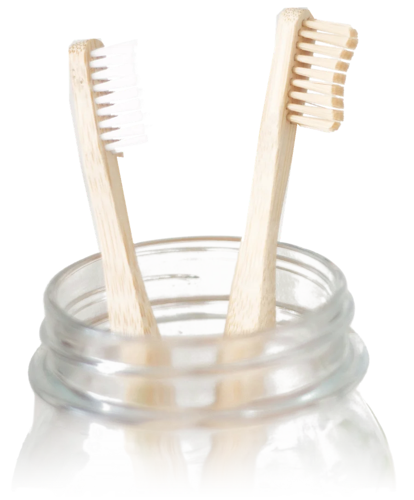

定期健診のご案内（予防のための健診）
痛む前に、みがく。削る前に、守る。
ちょっと寄って、ずっと守る。
こもれび歯科の定期健診
1回 約45分。健診の日は削りません（治療が必要なときは、説明してから次回に）。
かえで台駅から徒歩8分・スーパーの隣・駐車場6台・土曜も午前診療

健診の日にすること
健診の日は、削りません。
治療が必要なところが見つかったときは、その日に削らず、説明してから次回にします。健診は、歯と歯ぐきを見て、きれいにして、みがき方を一緒に確かめる日です。
- 歯と歯ぐきのチェック虫歯や歯ぐきの腫れがないか、歯科医師と歯科衛生士が見ます。
- 歯石の除去とクリーニング歯みがきでは落としきれない歯石や汚れを取ります。
- 歯みがきの仕方のアドバイスみがき残しの多い所と、歯ブラシの当て方をお伝えします。
健診の費用の目安：1回 ◯,◯◯◯円程度（保険診療の自己負担分。医院の金額を入れます）
子どもの健診（小児歯科）
子どもの歯も、同じように守ります。
- フッ素塗布
- 歯の表面にフッ素を塗ります。健診と同じ日に行えます。
- 仕上げみがきの相談
- おうちでの仕上げみがきのコツや、歯ブラシの選び方をご相談ください。保護者の方だけのご相談も受け付けています。
場所と診療時間
駅から歩いて8分、スーパーの隣です。
- 場所
- かえで台市中央0-0-0（架空の住所）
かえで台駅から歩いて8分。スーパーの隣にあります。 - 駐車場
- 6台（医院の前）
- 診療日
- 月・火・水・金と、土曜の午前（木曜・日曜・祝日は休み）。土曜も健診を受けられます。
- 予約
- 電話とWeb予約で受け付けています。
| 時間 | 月 | 火 | 水 | 木 | 金 | 土 | 日・祝 |
|---|---|---|---|---|---|---|---|
| 9:00〜13:00 | ● | ● | ● | ／ | ● | ● | ／ |
| 14:30〜19:00 | ● | ● | ● | ／ | ● | ／ | ／ |
休診日：木曜・日曜・祝日
自由診療
ホワイトニングも行っています。
歯の表面に薬剤を塗り、歯の色を明るくする方法です。保険は使えません（自由診療）。始める前に、歯と歯ぐきの状態を確かめてからご案内します。
- 内容
- 医院で行うホワイトニング（オフィスホワイトニング）。歯の表面に薬剤を塗って光を当てます。詰め物やかぶせ物の色は変わりません。
- 回数の目安
- ◯〜◯回（医院の数字をここに入れます）。歯の色やご希望によって変わります。
- 期間の目安
- ◯週間程度（医院の数字をここに入れます）
- 費用（税込）
- 1回 ◯◯,◯◯◯円（税込）（医院の金額を入れます）
- 主なリスク・副作用
- 施術中や施術のあとに、歯がしみること（知覚過敏）があります。歯ぐきに薬剤がふれると、ひりひりすることがあります。白くなり方には個人差があり、時間がたつと色が戻ることがあります。
- 問い合わせ先
- こもれび歯科 電話 00-0000-0000（診療時間内）
健診の予約
次の健診を、いま決めておく。
電話がしにくい時間でも、Web予約ならいつでも申し込めます。ご希望の日にちを確かめて、医院からご連絡します。
受付は診療時間内（平日 9:00〜13:00・14:30〜19:00、土曜 9:00〜13:00）